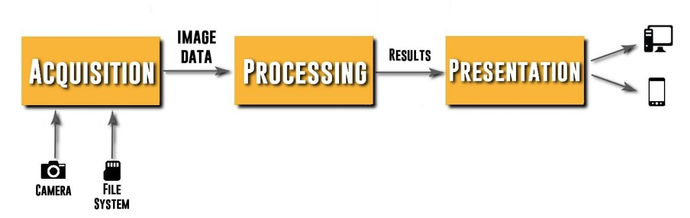
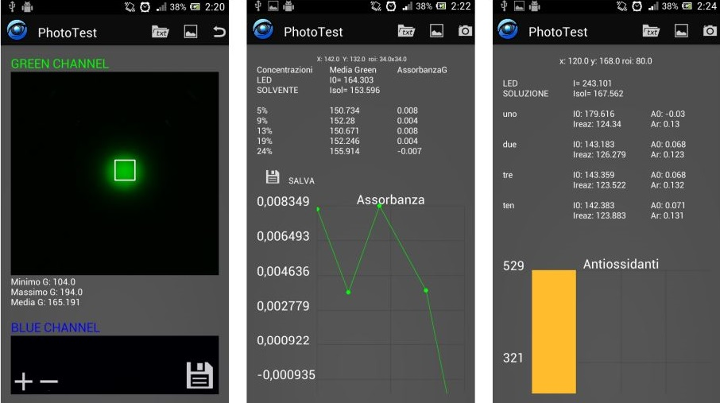

Hey, I'm
About me
I am Gianluca Bellini, born in Milan on April 20, 1991, based in Salsomaggiore Terme (PR), passionate about programming, technology and sports since ever.
I consider myself a reliable, efficient, collaborative person and always ready to stay in the game with dedication and passion.
Working in a big team allowed me to develop good leadership, management and coordination skills.
Tech. Skills
.NET SQL C# VB HTML CSS Git Grafana Scrum
Soft. Skills
Teamwork Coaching and Mentoring Creativity Prioritization Goal Setting Reliability

Projects
Card Market Grabber
I developed a data scraper designed to collect and store information about card listings from a popular trading card marketplace called Card Market.The system is based on a .NET console application that can be configured with different scraping strategies, from gathering data about specific cards to generating statistics on sellers and their inventories.
All the data collected is stored in a database that tracks changes over time. This allows me to identify sellers offering cards that meet specific price and quality criteria.
Once such listings are detected, the system sends me notifications via Telegram, enabling me to purchase cards in bulk at optimized prices.
To monitor the scraper’s activity and the imported data, I also implemented Grafana dashboards connected to the database. These visualize key metrics and trends, making it easier to track scraping progress and marketplace dynamics.

From a technical standpoint, I used Playwright, a browser automation library, to control browser instances and navigate the site programmatically.
Since CardMarket does not provide a public API, Playwright allowed me to configure page navigation and interaction logic, for example, clicking to expand listings, reading specific page elements, and extracting relevant information.
Repo: CardMarketGrabber
> More
Tech
C# TSQL Powershell Grafana Playwright
Javascript Pokémon battle game
For fun, I created a Pokémon battle game using JavaScript!I used JavaScript for all the character movement, hit detection, health bars, and animations, and made it all run smoothly in the browser.
It was a blast combining the Pokémon world with classic arcade-style fighting mechanics!
Repo: pkmnFighters
> More
Tech
Javascript HTML css
NOC team in iSolutions
iSolutions has always prioritized monitoring its applications and customer architectures. To deliver a highly proactive service, I led the development of a proprietary application, iSAlert, and guided the creation of a dedicated Network Operations Center (NOC) team.Read my full article at: labs.isolutions.it
In this post on the company blog, I’ll explain how the combination of our advanced technological tool, iSAlert, and our dedicated NOC team enables iSolutions to deliver a highly proactive and efficient monitoring and intervention service.
> More
Tech
Project management .NET SQL C# VB HTML CSS Git Grafana
Android application for diagnostic agricultural and food analysis based on image processing
I've developed this Android app as a thesis, and aims to analyze absorption of light by various substances, in order thus to identify absorbance.Several libraries were used in the development of this application, including OpenCV and GraphView. These open-source libraries offered simple yet accurate methods, making them ideal for implementing the image processing algorithms and for visualizing the results through graphs.
Another important consideration was the computational load the device would need to handle. Since the application processes images, it was not guaranteed that performance would meet the required standards. For this reason, the development made use of the NDK package, allowing parts of the OpenCV library code written in C to be used for image processing, thus improving efficiency and speed.
Main Features
- Acquisition interface
- Photo gallery management
- Data analysis
- Results presentation

ARCHITECTURE
At the architectural level, the application consists of three main blocks: the Acquisition Block, the Processing Block, and the Presentation Block.

ACQUISITION
This block is responsible for acquiring the images to be processed and managing those stored in the internal memory. It delegates their analysis to the Processing Block.

As shown in the image, it is possible to acquire a photo directly through the device’s camera or select one from the file system to send to the Processing Block. This means the app can analyze images even if they were not captured by the device’s camera.
PROCESSING
The Processing Block is the core component of the architecture. It handles all the functions implemented for image analysis and performs the most complex calculations. The image processing operations include:
- Image channel decomposition
- Image cropping
- Pixel analysis
- Filtering (binarization, saturation, etc.)

PRESENTATION
The final block displays the results obtained from the processing phase. This component plays a key role, as it requires a simple and clean user interface. The design was created from the perspective of the end user, ensuring that all relevant results are accessible on a single page.

> More
Tech
Android SDK Android SDK C OpenCV GraphView
Resume
Gianluca Bellini
Software Developer | .NET, C#, SQL @ iSolutions
Salsomaggiore Terme, Emilia Romagna, Italy
Work experiences
iSolutions software engineering
Software Developer | .NET, C#, SQL
Full Time
Noceto, Emilia Romagna, Italy
Jan 2025 - Present
As a Software Developer, I’m responsible for the development and maintenance of the company’s core software products.
My work focuses on designing, implementing, and optimizing robust applications using C# and SQL, primarily within the .NET framework (including some legacy components in VB).
I also work across the web stack, handling HTML, CSS, JavaScript, and Bootstrap to ensure responsive and user-friendly interfaces.
I’m passionate about writing clean, efficient code and continuously improving existing systems to meet evolving business needs.
.NET C# SQL PostgreSQL HTML CSS Javascript
iSolutions software engineering
NOC Team Manager
Full Time
Noceto, Emilia Romagna, Italy
May 2022 - Jan 2025
I oversaw the monitoring and management of both AWS cloud and on-premises infrastructures, ensuring optimal performance and system reliability.
Utilizing tools like Grafana, Dynatrace, and proprietary monitoring solutions, I led the team in tracking infrastructure health, software performance, and release processes.
Grafana Dynatrace Troubleshooting Incident Management KPI
iSolutions software engineering
Support and Dev team Line Manager
Full Time
Noceto, Emilia Romagna, Italy
Apr. 2020 - May 2022
As a Support and Dev Team Line Manager, I led a dynamic team of support engineers and developers, fostering a collaborative and high-performance environment.
I took pride in guiding my team through complex technical challenges, ensuring quick and effective issue resolution while driving process improvements.
Beyond technical leadership, I was deeply involved in recruitment, selecting the right talent to strengthen the team and align with the company’s vision.
Mentoring Recruiting OnBoarding Team Building Continuous Improvement
iSolutions software engineering
Support Dept. Developer
Full Time
Noceto, Emilia Romagna, Italy
Feb. 2015 - Apr 2020
In my role as a Support Department Developer, I focused on developing applications using .NET and SQL to enhance and maintain proprietary solutions for iSolutions.
I provided technical support to clients, ensuring seamless operation and resolving any issues related to our products.
This role allowed me to combine my passion for software development with direct client interaction, delivering tailored solutions and ensuring customer satisfaction through efficient problem-solving and continuous improvement.
In addition, I had the opportunity to work on-site during the startup phase for new customers.
As part of this, I traveled to Malta, Hamburg, and England, providing on-the-ground support to ensure smooth implementations and helping customers to integrate our solutions effectively into their operations.
SQL C# .NET Help Desk Support
ITIS Berenini
Part Time
Fidenza, Emilia Romagna, Italy
Set. 2011 - Jun. 2013
During my graduate studies at the University of Parma, I provided support to children with disabilities at the technical institute ITIS Berenini in which I graduated. This experience lasted about 2 years, on average 3 times a week, I participated in school classes, supporting the boys in learning and studying school subjects.

Bormioli Rocco
Stage
Fidenza, Emilia Romagna, Italy
Jun. 2009 - Sept. 2009
During fifth grade I had the opportunity to do an internship at Bormioli Rocco in fidenza. During the internship that lasted the entire summer of 2009, I had the opportunity to experience the knowledge I learned during my studies as an electronics technician. The main tasks were related to the maintenance of the company's electrical systems, working closely with experienced electricians.
Education
Università degli studi di Parma
Bachelor's degree in computer engineering
94/110
Parma, Emilia Romagna, Italy
2011 - 2014
Android SDK Android SDK C OpenCV GraphView
ITIS Berenini Fidenza
Technical and Vocational Institute Diploma, Technology/Electrical, Electronics and Communications Engineering Technician
87/100
Fidenza, Emilia Romagna, Italy
2005 - 2010
Printed Circuit Board Design PLC